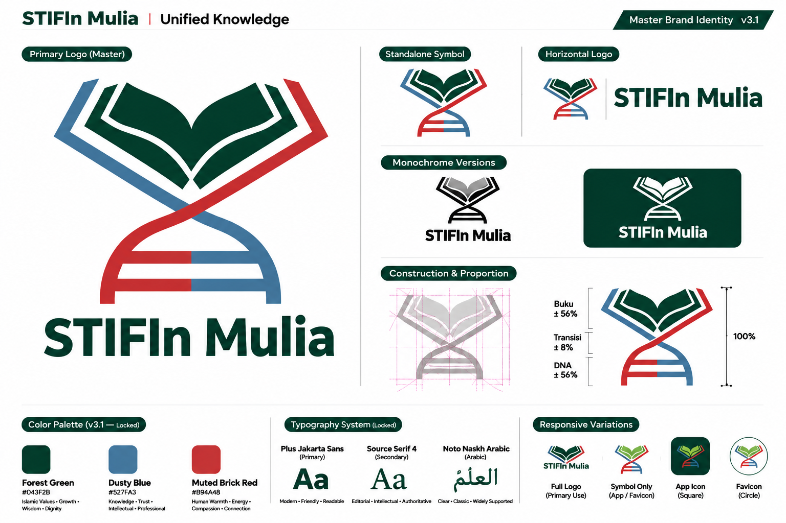

Lewati ke konten

Tema gelap
STIFIn Genetic Indonesia · Cabang Kabupaten Pekalongan
Kantor operasional: Jatinangor
Memuat ruang belajar…
Aktifkan JavaScript untuk mendaftar dan mengikuti pembelajaran.